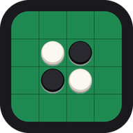

テレビ電話リバーシ
はなれて暮らす家族と、顔を見ながらリバーシ
お誘いの番号アプリを開いて番号を聞かれたら、この番号を入れてください
- まだアプリを入れていない方
App Storeで入れる（無料）
Google Playで入れる（無料）
入れ終わったら、App Storeの「開く」を押してください。そのまま相手とつながります。
- もうアプリを入れている方
アプリで開く
相手とつながって、テレビ電話で遊べます。
LINEの中で開いています。うまくいかないときは、右上の「…」から「ブラウザで開く」を選んでください。
Android版は準備中です。もうしばらくお待ちください。